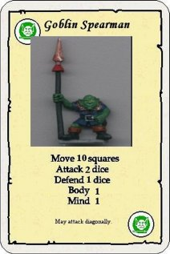

Goblin Spearman
by Azrael

Download the Goblin Spearman Monster Card (124K)
- This is just a standard goblin armed with a spear
- This allows the monster to attack diaganolly
- The spear can also be thrown using normal ranged weapon rules
- If the spear is thrown the goblin will try to leave the dungeon immediately if attacked he will defend with 1 defense dice
- He will only attack to get passed heroes he will attack with 1 attack dice
The model is from Warhammer Quest
Most model Manufacturers have goblin spearmen in their ranges
This monster can be used in both UK and US versions